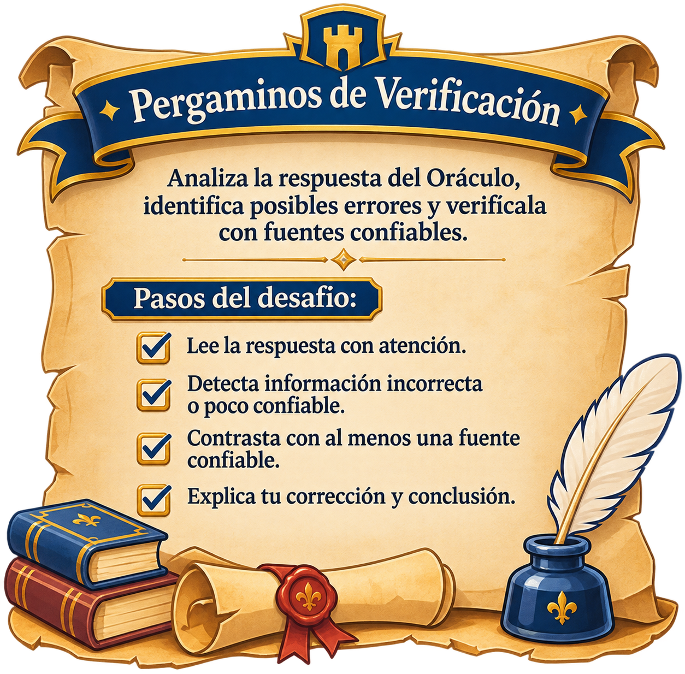
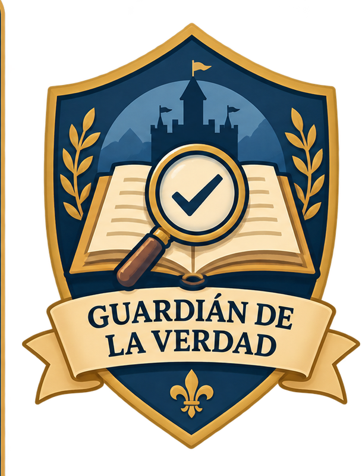

✦ ORDEN DE LOS SABIOS · EL REINO DE LOS SABERES PERDIDOS
Misión 3 de 4 · Los secretos de los pergaminos
Mensaje del Consejo Real · Tercera misión
3. Los secretos de los pergaminos
Aprendiz: algunos mensajes del Oráculo Real parecen convincentes, pero pueden contener errores o información incompleta. La biblioteca del reino necesita guardianes capaces de investigar antes de aceptar una respuesta.
Tu tarea será examinar un mensaje, consultar una fuente confiable y justificar una corrección. Recuerda: una respuesta bien redactada no siempre es una respuesta verdadera.
Tu propósito: contrastar información generada por IA, identificar un error y explicar la corrección con apoyo de una fuente confiable.
1
Aprende a verificar antes de confiar
Antes de aceptar la información de un pergamino, examina la fuente que la respalda. Puedes utilizar estas cuatro preguntas:
1. ¿Quién publica?Identifica al autor o a la institución responsable de la información.
2. ¿Qué evidencia presenta?Comprueba si incluye datos, explicaciones o fuentes que respalden lo que afirma.
3. ¿Está actualizada?Revisa la fecha de publicación o actualización, cuando esté disponible.
4. ¿Puedo contrastarla?Compara la afirmación con otra fuente confiable y pertinente.
Consejo del bibliotecario: no basta con que una página tenga una apariencia profesional. Revisa quién la publica, qué pruebas ofrece y si otras fuentes confiables confirman la información.
2
El mensaje sospechoso del Oráculo Real
El Oráculo ha enviado un mensaje para completar un antiguo pergamino de astronomía. Léelo con atención: tu misión es determinar si la información es confiable.
Mensaje del Oráculo · Fragmento por verificar
«El Sol es un planeta del sistema solar y no produce luz propia; únicamente refleja la luz de otras estrellas».
Advertencia del Consejo: el mensaje se presenta como material de análisis. No debes aceptarlo sin contrastarlo con una fuente confiable.
Primer veredicto del aprendiz
Según tu primera lectura, ¿cómo clasificarías el mensaje?
3
Consulta las fuentes del reino
Ahora contrasta el mensaje con información publicada por una institución científica. Abre la fuente si tienes conexión a internet y revisa el contenido. No necesitas registrarte ni iniciar sesión.
Fuente principal · NASA Space Place
¿Cómo es nuestro Sol con respecto a otras estrellas?
La página explica que el Sol es una estrella de tamaño medio y describe sus características.
Dato para contrastar: NASA identifica al Sol como una estrella situada en el centro de nuestro sistema solar.
Si no puedes abrir los enlaces: utiliza los datos de consulta incluidos en estas tarjetas para completar la práctica. Cuando tengas internet, vuelve a revisar las páginas oficiales y comprueba la información directamente en la fuente.
4
Resuelve el pergamino de verificación
Completa cada paso para demostrar que sabes identificar, contrastar y corregir información. La página comprobará que hayas completado la ficha; la calidad de tu explicación será revisada por el docente.
1
Identifica el errorSeñala qué parte del mensaje del Oráculo no coincide con la información científica consultada.
2
Contrasta con una fuenteRegistra el nombre de la institución y el título de la página que consultaste.
3
Escribe la correcciónRedacta una versión correcta de la afirmación, usando tus propias palabras.
4
Justifica tu conclusiónExplica por qué la fuente te parece confiable y qué dato respalda tu corrección.

El Reino de los Saberes Perdidos
Pergamino de verificación · Misión 3
5
Tu evidencia: pergamino de verificación
Instrucción: completa la ficha con tus hallazgos. No incluyas contraseñas ni datos personales sensibles.
Completa los campos para preparar tu evidencia. La validación no sustituye la revisión del docente.
¡Pergamino completado! Has reunido los elementos solicitados. Tu evidencia está lista para revisión docente. La insignia «Guardián de la Verdad» será validada cuando el docente revise la calidad de tus respuestas.
Mensaje del Oráculo: «El Sol es un planeta del sistema solar y no produce luz propia; únicamente refleja la luz de otras estrellas».
Veredicto:Pendiente
Identificación del error:
Fuente consultada:
Dato de respaldo:
Corrección:
Confiabilidad:
Conclusión:
6
Tu recompensa: Guardián de la Verdad

Insignia «Guardián de la Verdad»
La obtendrás cuando el docente valide tu pergamino de verificación. Has demostrado que una persona sabia no acepta toda respuesta sin investigar, contrastar y justificar.
Orientaciones para el docente · distribución de los 60 minutos
5 minutos: presentar la historia de los pergaminos y el mensaje sospechoso del Oráculo.
10 minutos: explicar los criterios básicos de verificación: autoría o institución, evidencia, actualización y contraste.
10 minutos: leer la afirmación del Oráculo e identificar qué información requiere comprobación.
15 minutos: orientar la consulta individual de las fuentes oficiales de NASA Space Place y NASA Ciencia.
15 minutos: completar el pergamino de verificación, redactar la corrección y justificar la confiabilidad de la fuente.
5 minutos: ofrecer retroalimentación y validar la insignia «Guardián de la Verdad» según la calidad de la evidencia.
Clave de análisis: el mensaje es incorrecto porque el Sol no es un planeta; es una estrella situada en el centro del sistema solar. La NASA describe al Sol como una estrella de tamaño medio, formada principalmente por hidrógeno y helio.
Criterios para revisar la evidencia: identifica el error; registra una fuente pertinente; recupera un dato que respalda la corrección; redacta una afirmación científicamente correcta; justifica por qué la fuente es confiable; explica por qué las respuestas de IA deben verificarse.
Implementación: los enlaces a NASA abren páginas públicas sin requerir registro. Si la conexión no está disponible, la misión incluye una ficha de consulta resumida para practicar el contraste. La página no envía ni almacena las respuestas en servidores.